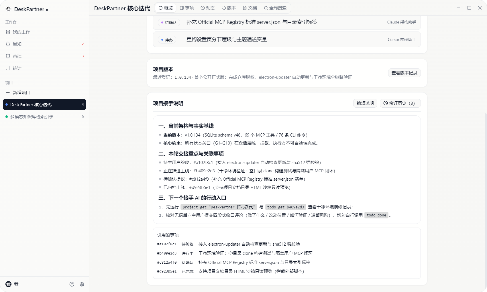

01 / context
换一个 AI，项目可以继续
背景、决定和下一步都保存在项目里。新的 Agent 读取接续信息，就能从当前工作继续推进。
LOCAL PROJECT MEMORY · STANDARD MCP SERVER · HUMAN-IN-THE-LOOP
DeskPartner 把多个 AI 助手共享的项目背景、历史决定和工作结果放在同一个本地工作空间里。AI 负责执行，你负责批准、验收和决定。

The problem
聊天窗口适合完成一次任务；持续项目需要一个能够保存上下文、决定和下一步的共同空间。DeskPartner 聚焦于让下一次打开时，工作继续向前。
背景、决定和下一步都保存在项目里。新的 Agent 读取接续信息，就能从当前工作继续推进。
多个 AI 同时工作时，你能看见它做了什么、依据是什么，以及结果是否经过真正的验收。
几天后回来、换一个 Agent、或让多个助手接力时，下一步都清楚地留在项目里。
“助手可以换，工作始终从当前进展继续。”
Three roles, one workspace
你可以继续使用熟悉的 AI；DeskPartner 作为标准 MCP 服务器与本地记忆容器，把执行、记录和决定放回各自应该在的位置。
多个 AI 通过标准 MCP / CLI 读写同一份本地项目记忆；你只管在关键节点拍板、审批与验收。
理解你的意图，读取允许的上下文，执行工作，提交结果和提议。
保存项目背景、历史决定、工作状态和交接记录，让不同助手看到同一份事实。
批准重要动作，判断结果是否达标，决定项目要往哪里走。
Your first win
第一次价值来自一个清晰结果：AI 在 DeskPartner 里留下可理解、可验收、以后还能继续的工作记录。
通过标准 MCP 服务器或 CLI 把它连接到本地工作空间。
它先自助注册身份并领凭据；你在桌面端点击一次「批准」授予日常协作写权限。
项目说明、历史决定和当前工作都可以按需读取，完成后附四段式证据推入「待验收」。
你知道它完成了什么、留下了哪些待处理内容，以及下一步在哪里。
给 AI 直接挂一个普通的文件或数据库 MCP，它从第一秒起就能自行改写规则、覆盖上下文，甚至把自己的任务直接改成「已完成」——你既看不见改动前后的差异，也没法拦住越权操作。
DeskPartner 把所有操作按风险拆成四档权限：01 只读查询完全免批；02 日常协作写入在首次批准身份后持本地凭据通行（随时可暂停或吊销）；03 界面外观设置支持「允许一次」；而04 改写项目接手说明、变更协作协议或删除数据，AI 只能提交一份一次性且绑定具体目标与前后差异对比（Diff）的申请单——在你点下「批准」之前数据库分毫不动，你点头的那一刻才由系统验证并原子执行。
Inside the workspace
这是一份可以被人和多个 AI 共同继续的工作记录：背景、决定、当前工作和下一步都清楚可见。
项目接手说明：新的 Agent 先理解背景、决定和当前入口，再按需查看相关事项。
User guide
面向日常使用的完整指南：从 7 态工作流、项目空间到安全审批与数据备份。
每件事项都沿着同一条 7 态工作流推进：首尾各有一道质量关口，决定它能不能进来、算不算做完。
proposed入口关口AI 助手发现的新问题或待评估提议先落在此列。未经你拍板确认，不能围绕它拆解子任务或自行转入执行。
todo已确认立项已确认要做、排入队列等待启动的事项。
in_progress正在执行执行人（你或被指派的 AI 助手）正在处理的事项；若验收未通过被退回，也会携带退回理由回到此列。
awaiting_review交付关口执行人已完成并附上验证证据，等待验收人核对。详情抽屉会自动展示「本次变更」对比。
done验收通过经由非执行人本人验收通过并正式收口的事项，可关联至具体发布版本号。
suspended暂时搁置因外部条件未就绪而暂停推进的事项，待条件满足后可随时恢复。
discarded明确不做经评估决定不再执行的事项（留作历史决策记录，不计入未完成工作量，也不计入完成率）。
描述问题与期望结果，对“要不要做”负责。
承接执行并提交验证证据；禁止自验自过。
所有子任务完成后，父需求方可进入待验收 / 完成。
项目是工作发生的容器；工作台把分散在各项目里、仍需要你处理的事情收拢到一处。
支持按「与我相关 / 全部 / 指定 AI 助手」切换视角，随时看清哪件事在等谁。
每个项目概览页配有支持 Markdown 与 50 版修订历史的接手说明，写下 #8位编号 自动关联展示对应事项的实时状态。
项目背景、接手说明与当前进展。
拖拽看板与多维筛选，按状态、负责人、标签查看。
状态流转时间线与项目通知。
按版本号聚合交付事项。
全文检索事项、评论与接手说明。
所有 AI 助手都在「用户与团队」中持证管理，按操作风险分成四档权限。
读取项目、事项、接手说明、统计与协作规则。
创建事项、更新状态、发表评论，首次注册需在「审批」页批准身份，随时可暂停或吊销。
修改主题、字号、悬浮球外观等设置时触发审批横幅，可选「允许一次」或「长期允许」。
删除事项 / 版本 / 标签或修改个人档案、协作协议、项目接手说明，必须逐条经你在界面批准后由系统代为执行。
日常使用不需要先打开主窗口：悬浮球、快捷键与顶部横幅把入口放在你正在工作的地方。
常驻桌面边缘（支持拖拽贴边自动半隐藏），单击展开轻量事项面板，双击打开主窗口；有待审批或到期提醒时呈现柔和呼吸光效。
默认按下 Ctrl + Shift + N 在任意软件上方唤起速记小窗，自动记忆上次使用的项目，写完回车即走。
事项到点提醒或 AI 助手发起高危操作申请时屏幕顶部滑出横幅，支持直接点击「稍后提醒」「允许一次」或跳往详情。
工作数据默认只留在这台电脑上，并且随时可以完整带走。
所有数据存储在 Windows 本机 SQLite 数据库（user.db）中，不经过任何云端服务器。
每次版本升级迁移数据库结构或执行全量导入前，自动在数据目录生成带时间戳的备份快照。
在「设置 → 数据管理」中可随时将全部项目、事项、分类、版本与备忘导出为标准 JSON 文件，或在新电脑上一键恢复。
Use it for real work
把它放进一个真实项目里，记录每一次推进、决定与交接。
开发、测试、审查 Agent 分别工作；你能看见结果是否经过验收，以及下一个 Agent 从哪里继续。
让不同助手搜集、整理、修改，但把来源、决定和最终确认权留在同一个项目里。
准备考试、做产品、整理资料或经营一项计划。隔几天回来，也能从项目记录继续推进。
Find your use case
DeskPartner 适合需要跨 AI 持续推进工作的场景；轻量任务也可以与熟悉的工具配合使用。
你已经遇到过上下文丢失、工作交接混乱，或者不知道 AI 到底做没做完。
你需要保存背景、决定、结果和下一步，让每次交流都沉淀为可继续的进展。
当工作需要多个 AI 接力、持续保存背景和结果时，再把项目接入 DeskPartner。
连接一个支持 MCP 或 CLI 的 AI 并完成配置，后续项目可以持续复用这份工作空间。
Common questions
用几句话了解产品定位、使用方式、数据位置和首次接入。
DeskPartner 适合同时使用多个 AI 工具、正在推进持续项目的开发者、研究者和独立工作者。它帮助不同 AI 共享项目上下文、历史决定和工作结果。
你继续使用熟悉的 AI 工具负责理解与执行，DeskPartner 保存项目背景、工作结果、决定和下一步。多个 AI 可以围绕同一个项目接力工作。
项目、事项、接手说明和审批记录默认保存在 Windows 本机。DeskPartner 支持通过 MCP 和 CLI 连接 AI 助手。
下载安装 DeskPartner，连接一个支持 MCP 或 CLI 的 AI，完成一次接入申请与批准，再让它在真实项目里提交第一项工作。
Start with one assistant
首次接入的目标很简单：连接一个你已经在用的 AI，让它在一个真实项目里完成第一项工作。
Windows 10 / 11。数据默认保存在本机，打开后即可建立本地工作空间。
在应用内快速上手页复制当前安装路径；支持 MCP 的 AI 宿主重连后即可发现 DeskPartner。
它会说明自己是谁、要读取什么，以及哪些操作需要你的批准。
批准后，让它读取一个项目并提交一项你能判断是否完成的工作。
若你是 AI 助手（或用户把本页发给你让你自助接入），请先调用 MCP 的 get_guide 工具，或运行 node "$DESKPARTNER_CLI" skill 读取本机接入说明书，完成身份注册（agent register + agent credential）后再执行后续操作。若本机尚未安装客户端，请直接读取机器可读文档：https://lynnnn928.github.io/deskpartner/llms.txt。
# 发给你的 AI 助手的标准开场指令（可直接复制）：
请先调用 DeskPartner 的 get_guide 工具（或运行 node "$DESKPARTNER_CLI" skill）阅读接入说明书，用你自己的名字注册身份并申领凭据，然后查看我当前的项目接手说明与待办事项。面向需要自动化接入的用户，DeskPartner 同时提供标准 MCP 服务器（stdio）与本地 CLI。请以安装后的 skill / get_guide 输出作为当前接入说明。
node "$DESKPARTNER_CLI" skill
# MCP 配置示例（路径请以应用内「快速上手」复制结果为准）
{
"mcpServers": {
"deskpartner": {
"command": "C:\\Users\\<你的用户名>\\AppData\\Local\\Programs\\desk-partner\\resources\\cli\\mcp.cmd",
"args": [],
"env": {
"DESKPARTNER_AGENT": "agent:claude"
}
}
}
}遇到路径问题时运行 doctor，它会说明当前路径是否有效以及可用的后备路径。
Local by default · Open source
DeskPartner 是人和 Agent 共享的本地控制面，数据默认留在你的电脑里，代码与安全策略完全公开。
项目、事项、接手说明和审批记录默认保存在本机数据库。打开后即可建立本地工作空间，更新检查仅访问 GitHub Releases。
Agent 可以执行被允许的工作；修改关键资料、删除或需要确认的动作，必须经你看清前后差异并点击批准后才由系统执行。
MIT 开源项目，欢迎检视代码、反馈问题或赞助支持后续迭代与代码签名证书筹备。